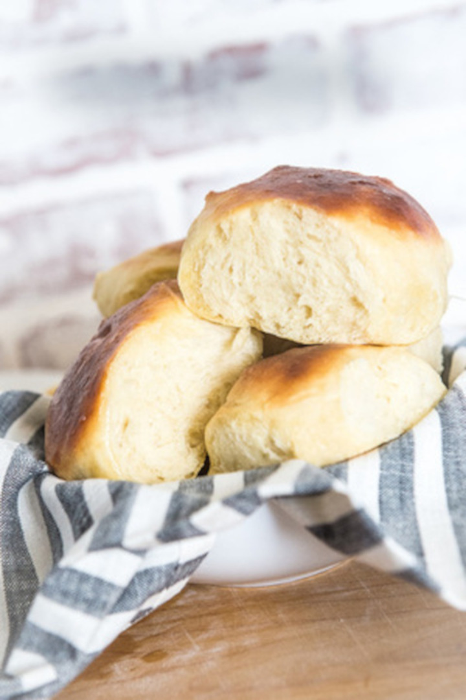

Freshman Fifteen Dinner Roll Recipe

Ingredients
- 1 cup water, plus
- 1 tbsp water (70-80F)
- 1 large egg
- 4 1/2 tsp vegatable oil
- 1/4 cup sugar
- 1 1/2 tsp salt
- 3 1/4 cups bread flour
- 2 1/4 tsp instant yeast
- 2 tbsp melted butter
- 2 tbsp shortening (optional)
Stand Mixer Steps:
- Combine all the ingredients, minus the shortening and butter,
in the bowl of your stand mixer ni the order listed in the ingredients
- Cover the bowl with plastic wrap and set aside to rise until the dough
has doubled in size, or about one hour.
- Once the dough has risen, remove from bowl onto a lightly floured surface.
Shape into 15 uniformed sized doughballs. (Use the shortening if the dough
is very sticky.
- Lightly butter a 9x13 baking pan. Place rolls onto baking pan, cover and let
rise until double in size (approx. 30 min.).
- Bake in a 350F degree oven for 15 minutes or until a light golden brown.
- After removing from the oven, brush with melted butter. Serve warm.
Note:
This recipe can easily be done with a bread machine on the dough setting
Original Recipe